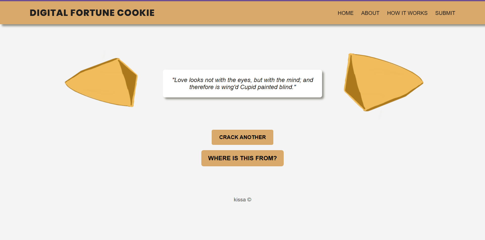
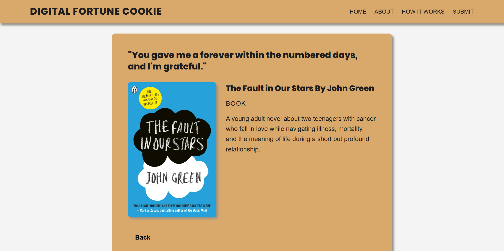

Digital Fortune Cookie

The Digital Fortune Cookie is an interactive web-based experience that generates randomized “fortunes” by pulling quotes from a curated database of films, songs, and books. The project reimagines traditional fortune telling through digital culture and media archives.
Users click to receive a new fortune, creating a playful and unpredictable interaction between algorithmic randomness and cultural meaning.
Tools Used: HTML, CSS, JavaScript
Focus: Interaction Design, Randomization Logic, UI/UX

